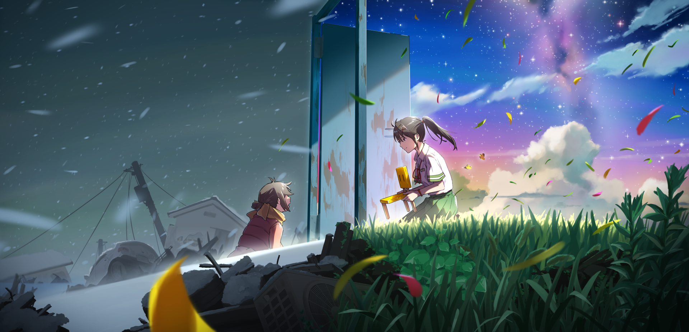
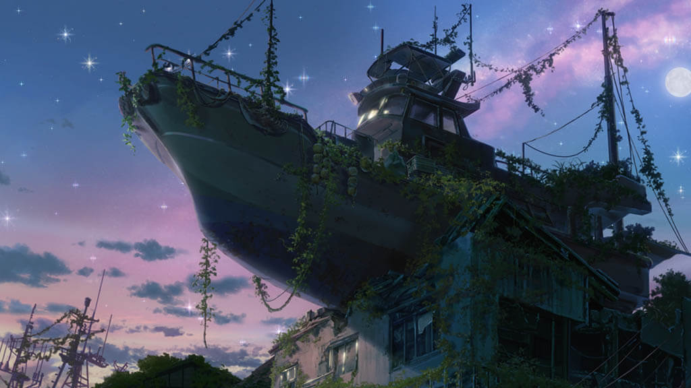

The Ever After

One powerful example of artistic media in Suzume is the depiction of Ever After, a dreamlike world filled with floating ruins and glowing doors. This surreal landscape reflects Suzume’s emotional state—unstable, yet strangely beautiful. The Ever After visually represents the space where her trauma and memories are stored, making the inner workings of grief something the audience can literally see. This artistic choice supports the thesis by transforming internal emotional struggles into vivid, external imagery, helping us understand how Suzume processes her pain.
Ruins

Another key artistic element is the recurring use of broken and abandoned structures such as collapsed schools, forgotten homes, and overgrown ruins. These physical environments mirror the emotional ruins left by trauma and disaster. As Suzume travels through these spaces to close doors, the visuals reinforce her internal journey of mending what was lost. This supports the thesis by showing how the anime’s art direction isn’t just background, but it actively communicates themes of destruction, memory, and healing.